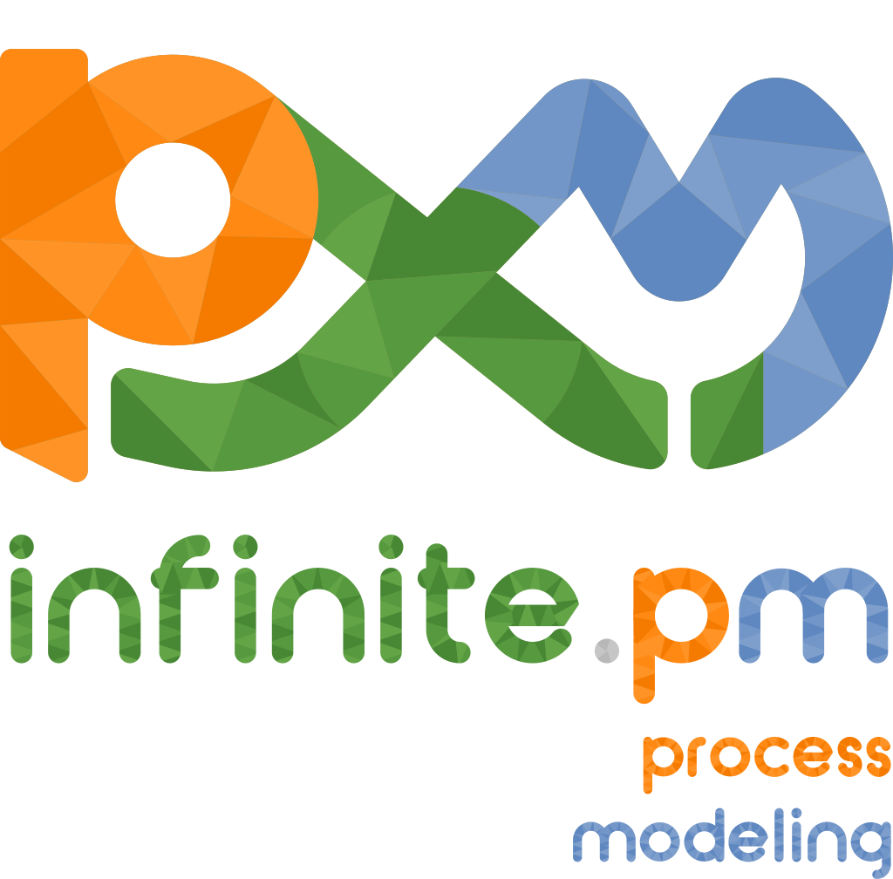
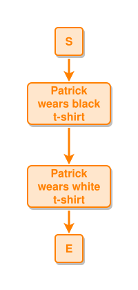
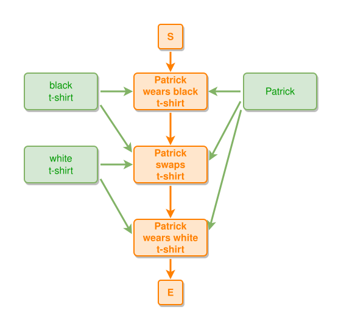
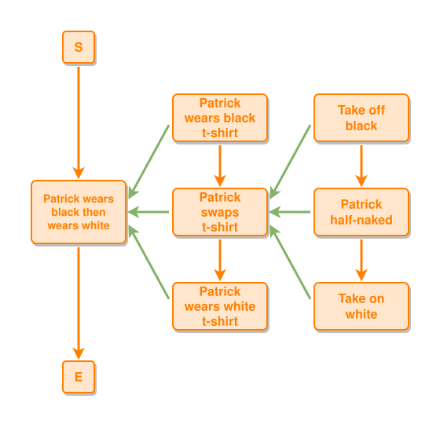
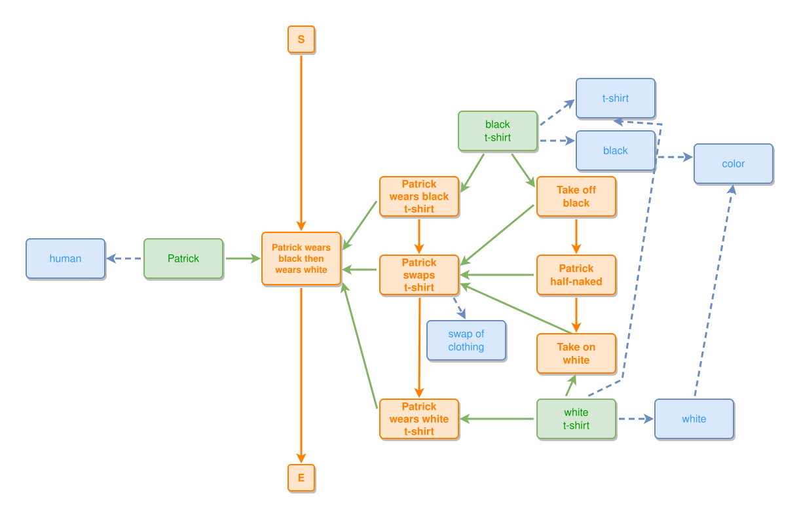

Infinite Process Modeling
“The universe is made of stories, not of atoms.”— Muriel Rukeyser
“Everything said is said by an observer.”— Humberto Maturana
“We do not see things as they are, we see them as we are.”— Anaïs Nin
“All models are wrong, but some are useful.”— George Box (statistician)
“The world is not a collection of things, it is a collection of events.”— Carlo Rovelli
“No phenomenon is a real phenomenon until it is an observed phenomenon.”— John Archibald Wheeler
“The past has no existence except as it is recorded in the present.”— John Archibald Wheeler
“An object is a monotonous process.”— Nelson Goodman
“A model: a simplified representation of something for a purpose.”— Joshua Spodek
“The difference between things and events is that things persist in time; events have a limited duration… The world is made up of networks of kisses, not of stones.”— Carlo Rovelli
“The world is not made of objects, but of relationships.”— Carlo Rovelli
“Bits are not bugs, and data is not knowledge. Information is a relationship between a system and its environment.”— Heinz von Foerster
“The map is not the territory.”— Alfred Korzybski
“Our fascination with logic itself is based on the fallacy that there are invariant truths about the world.”— Mark Burgess
“A recording isn’t knowledge. A single data point is little better than looking up someone in the telephone directory — that doesn’t mean we know them!”— Mark Burgess
“Relationships between objects constitute our notion of space. When these relationships change we interpret this as the passage of time.”— Mark Burgess
“Observer interpretations are essential to the way we understand these relationships. Hence observer semantics are an integral part of what we mean by spacetime.”— Mark Burgess
“A promise is a statement of intent… It’s always better to flip the discussion around to what promises components can make independently.”— Mark Burgess
“Knowledge doesn’t always come directly from a specific thing or source. It’s a process about understanding processes — about telling stories.”— Mark Burgess
“The meaning in memory is derived from our Intentional Focus and our Ambient Context.”— Mark Burgess
“The nature of space and time is intrinsically linked to the problem of measurement.”— Mark Burgess
A way to model processes, stories and systems as readable graphs — an experiment applying Mark Burgess's Semantic Spacetime γ(3,4). With just three node kinds (event, thing, concept) and four edge kinds (leads-to, part-of, expresses, near-to), you can sketch any observer's view of anything in space and time.



